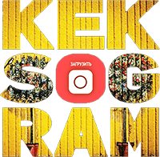

Проект: социальная сеть "Кекстаграм"
Превью и лого проекта

Описание и функционал социальной сети "Кекстаграм"
Функционал сайта:
- При нажатии кнопки "загрузить" можно отправить свою фотографию на сервер, попутно добавив к ней фильтр, его насыщенность и настроив другие параметры
- При клике на одной из кнопкок в верхней части экрана изображения, скаченные с сервера, фильтруются
- При клике на изображении открывается его карточка. Комментарии, скачанные с сервера, подгружаются при нажатии на кнопку "загрузить еще"
- Полный список доступного функционала можно узнать из тз
Технологии и особенности:
- Верстка сайта была готова изначально
- Для выполнения задач использовался js
Контакты
mokrousov01@ya.ru
+7(924)-618-99-43
+7(924)-618-99-43